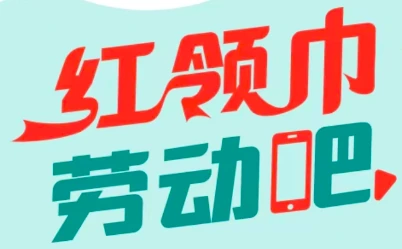
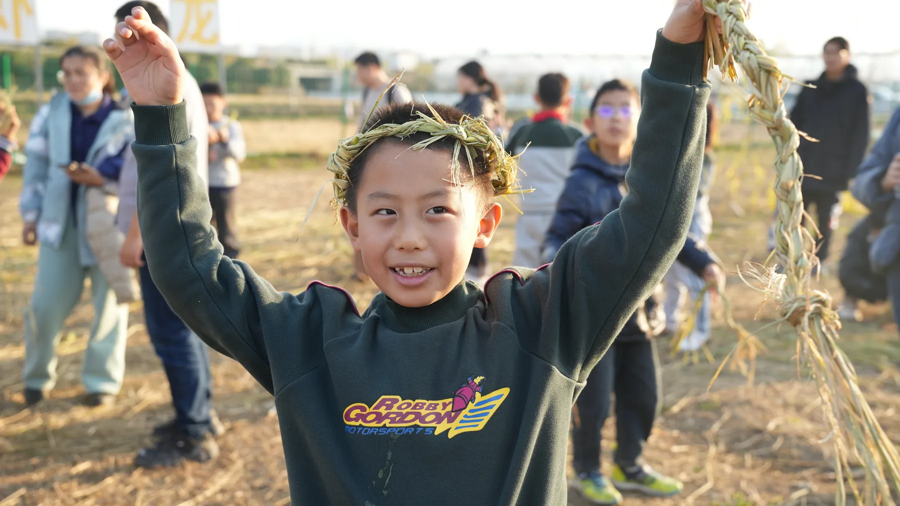
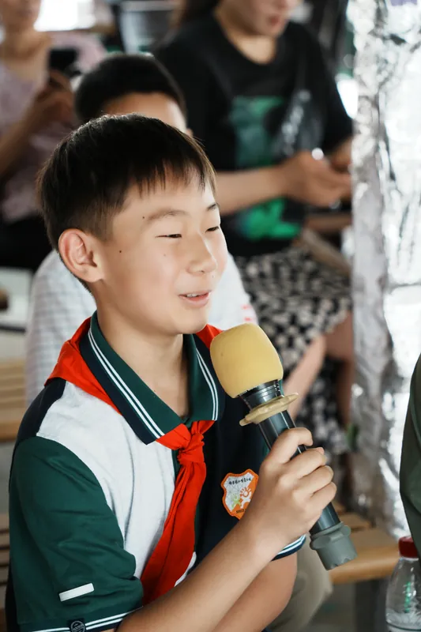
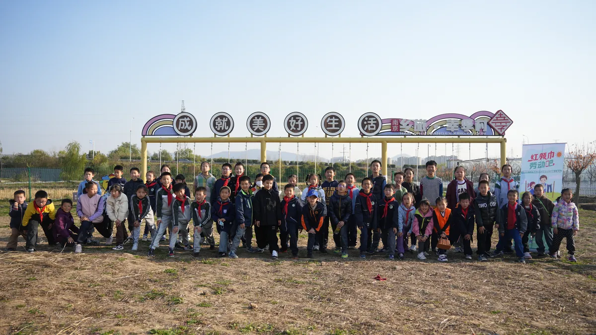
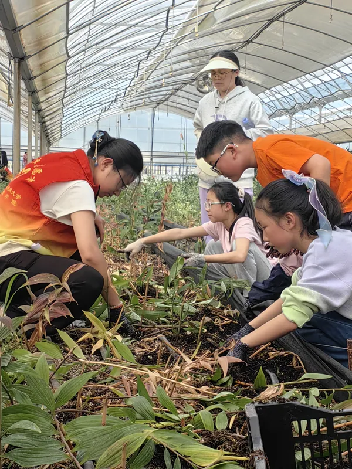
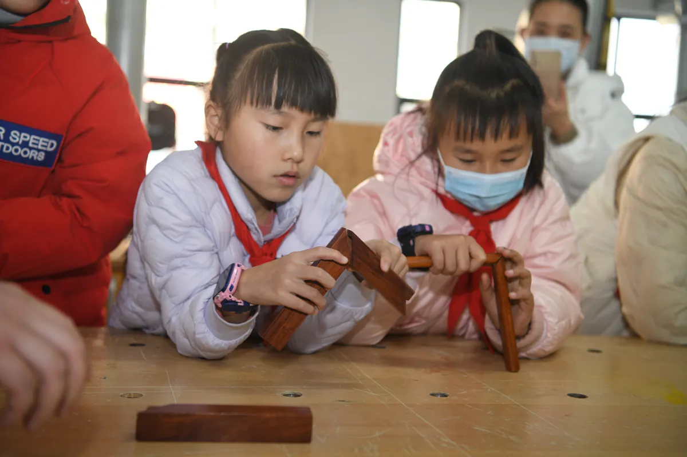
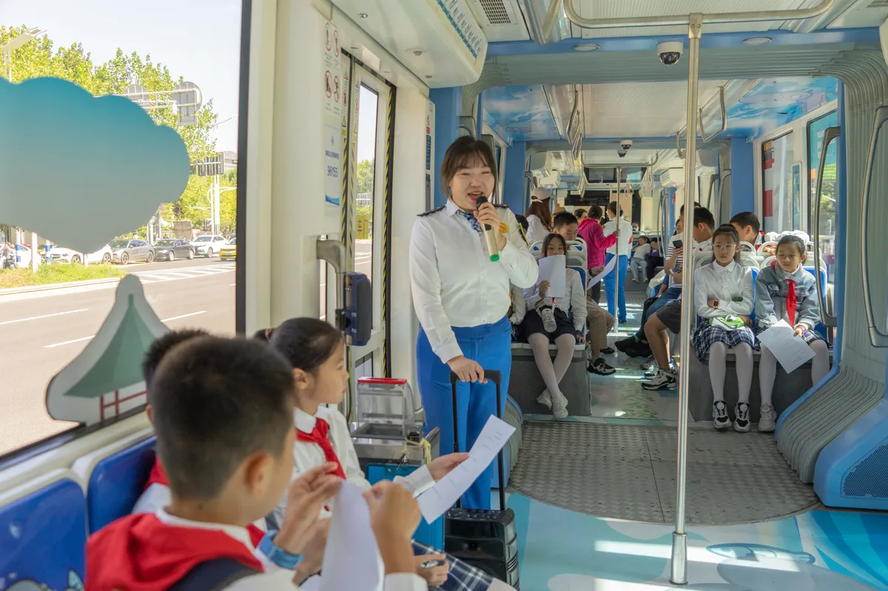

真实劳动
从劳动任务出发，让学生真正动手、出力、解决问题，而不是参观式打卡。

红领巾劳动吧 劳动教育协同服务平台
真实劳动 · 项目学习 · 成长记录 · 家校社协同
红领巾劳动吧连接学校、家庭、社区、劳动实践基地与社会专业资源， 把课程、实践、记录、传播和年度品牌项目组织成可执行、可追踪、可复盘的协同体系。
平台定位
劳动教育需要课程，也需要真正的劳动任务、稳定的校外场景、清晰的安全责任和可积累的成长证据。 红领巾劳动吧不是一次活动的集合，而是面向学校建设任务和学生成长过程的年度运营伙伴。
南京小朋游教育科技有限公司承担合作对接、方案设计、运营组织与交付协调。 平台围绕学校需求筛选和共创项目，连接适龄基地与专业导师，形成任务单、过程记录、学生作品、新闻内容和复盘报告。
从劳动任务出发，让学生真正动手、出力、解决问题，而不是参观式打卡。
明确适用学段、工具材料、步骤、安全提醒、成果标准与评价方式。
用签到、任务、作品、采访、反思和反馈，形成完整的过程性证据。
让学校发挥主导作用，家庭主动参与，基地和社会资源有效支持。
运营闭环
平台把两端转化为可执行项目，再通过少年实践观察团、内容传播、成长记录和年度活动持续连接。 是否形成闭环，以签约、到账、完成交付、满意反馈和续约为判断依据。
从需求诊断到课程、基地、成果和传播，减少学校逐项寻找与反复协调的成本。
不止挂牌展示，更完成项目梳理、适龄设计、内容沉淀和学校需求连接。
建立资源目录、项目标准、过程数据和典型案例，支持区域统筹与示范推广。
合作方式
基础合作明确可验收交付，活动交通、材料、保险、导师和专项拍摄等费用按单场项目另行确认。
把学校劳动教育特色、学生组织与全年内容传播一起运营。
把真实产业和场地资源转化为清晰、适龄、可交付的劳动项目。
需求调研与区域资源地图
学校与基地项目目录
教师与基地导师培训
区域劳动技能展示活动
过程数据与年度报告
典型案例传播与复盘
劳模工匠与职业寻访
企业真实任务课程化
公益活动与项目支持
基地共建与员工志愿服务
品牌内容与成果展示
赛事项目与物资支持
说明：新闻发布、平台展示、联合主办、授牌、证书、赛事及媒体权益，均以具体合同、内容审核和专项审批为准；不承诺固定曝光、客流、行政认定或赛事晋级。

从参与者到观察者、记录者、表达者少年实践观察团
每所合作学校可邀请50—100名学生自愿加入。少年观察员在学校、基地和社区完成劳动任务， 学习观察、采访、记录和表达，形成实践作品与成长档案。成员身份不以缴费换取，参与活动须由学校推荐并取得监护人知情同意。
年度内容计划
寻访劳动教育特色学校与一线劳动者，让学校经验、校长理念、师生故事和工匠精神形成可传播的年度内容。
年度汇合项目
拟以校内选拔、区域活动和全省展示衔接课程、基地与少年组织。赛制、主承办单位、证书、收费和发布渠道以专项方案及审批结果为准。

公益连接
合作基地每年共同开展2场适龄公益活动，形成真实体验、成长记录和基地首批案例。
实践图谱
以真实产业、真实岗位和真实问题为课堂，让不同年龄的孩子在适合自己的任务中理解劳动、掌握技能、学会合作。



合作流程
建议从一次60—90分钟需求工作会开始。学校、基地或区域项目都遵循同一套可追踪流程。
明确对象、任务、时间、预算、审批路径和决策人。
梳理已有基础、真实缺口、场景资源与安全边界。
明确交付清单、各方责任、费用、验收和年度节点。
完成课程、活动、保险、授权、现场执行和内容审核。
提交记录、作品、内容成品、反馈与阶段数据。
根据质量与成效调整下一阶段课程、活动和共建方向。
政策依据
国家政策强调劳动教育必修课程、劳动周、日常生活劳动、生产劳动和服务性劳动； 家校社协同文件强调学校主导、家庭尽责、社会支持，并提出建立稳定的社会实践基地与资源目录。 南京持续推进劳动教育特色学校、数字资源库和多行业基地群建设。
交付底线
面向未成年人开展项目，必须把安全、授权、数据、内容和收费边界写进每一次执行。
场地踏勘、风险清单、人员分工、保险、医疗联络、极端天气和应急预案。
监护人知情同意、最小必要收集、分级权限、明确保存期限和删除机制。
学校初审事实和学生信息，平台复审版权、广告和公开传播风险。
不以挂牌替代行政认定，不承诺固定客流、曝光、荣誉、证书或赛事晋级。